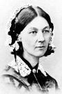

Modern tıbbın simgesi haline gelen Florence Nightingale (1820–1910), hasta ve yaralı İngiliz askerlerini tedavi ederek binlerce hayat kurtarması ile büyük bir üne kavuşmuştur. Bu süreçte yaptıkları ile hemşirelik mesleğinin yeniden değer görmesini sağlamıştır.
Nightingale aristokrat bir İngiliz ailesinin çocuğu olarak dünyaya geldi. On yedi yaşındayken hemşire olmaya karar verdi. Aile çiftliklerinin bahçesinde dolaşırken Tanrı’nın sesini duyduğuna inanmış ve ardından bu kararı vermişti.

Ancak o günlerde hemşirelik gözde bir meslek değildi. Nightingale’in ailesi onun bu isteğine karşı çıktı. Bunun yerine onu İtalya, Almanya, Yunanistan ve Mısır’ı kapsayan bir yolculuğa gönderdiler. Nightingale Almanya’da bir hemşirelik okuluna yazılınca ailesinin bütün planları boşa çıkmış oldu. 1853 yılında İngiltere’ye döndükten sonra hemşire olarak çalışmaya başladı.
Nightingale asıl ününü Kırım Savaşı’nda kazandı. 1854 yılında başlayan savaşta bir yanda İngiltere, Fransa ve Osmanlı İmparatorluğu, diğer tarafta ise Rusya vardı. Nightingale, bir aile dostları olan İngiltere savaş bakanını ikna ederek Osmanlı İmmparatorluğu’ndaki askeri hastanelerden birinde çalışmak için izin kopardı.
Hastanede muhatap olduğu koşullar korkunçtu. Lağımlar taşmış, hastaneyi fareler ve böcekler basmıştı. Yaraları nedeniyle ölen askerlerden çok daha fazlası hastalık nedeniyle ölüyordu.
Nightingale, yaralılara taze yemek ve su temin edip hastaneyi sürekli temiz tuturak koşulları oldukça iyileştirmeyi başarmıştı. Hastaneye ilk geldiğinde hastalar arasındaki ölüm oranı % 60 civarındaydı. O ayrıldığında bu oran % 2’ye düşmüştü. İngiliz askerleri tarafından bir idol haline getirildi. Ona “Lambalı Kadın” diyorlardı. Zira gece geç saatlerde elinde lambasıyla hastaları ziyaret ediyordu.
Savaştan sonra İngiltere’deki hastane koşullarının düzeltilmesi için çalıştı. Kendi yöntemlerini başkalarına aktarabilmek için bir hemşirelik okulu kurdu. Doksan yaşındayken Londra’da öldü.
Ek Bilgiler
1- Evlendikten sonra uzun bir Avrupa seyahatine çıkan Nightingale’in ebeveynleri, kızlarına Florence adını İtalya’da doğduğu şehre gönderme yaparak vermişti. Büyük ablası da İtalya’da doğmuştu. O da Napoli şehrinin Yunanca adı olan Parthenope ismini almıştı.
2- “Florence Nightingale Etkisi” hastalarına aşık olan doktor ve hemşireler için kullanılan psikolojik bir terimdir. Nightingale’in, ismini kendisinden alan bu ruh halini yaşadığına dair herhangi bir kanıt yoktur.
3- Nightingale, 1907 yılında Liyakat Nişanı kazanan ilk Britanyalı kadın oldu. Kral 7. Edward (1841–1910), savaş sırasında yaptığı hizmetlere karşılık onu bu nişanla ödüllendirmişti.